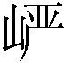

第四回中既将薛家母子在荣府内寄居等事略已表明，此回则暂不能写矣。
如今且说林黛玉自在荣府以来，贾母万般怜爱，寝食起居，一如宝玉，迎春、探春、惜春三个亲孙女倒且靠后；便是宝玉和黛玉二人之亲密友爱处，亦自较别个不同，日则同行同坐，夜则同息同止，真是言和意顺，略无参商[3]。不想如今忽然来了一个薛宝钗，年岁虽大不多，然品格端方，容貌丰美，人多谓黛玉所不及。而且宝钗行为豁达，随分从时[4]，不比黛玉孤高自许，目无下尘，故比黛玉大得下人之心。便是那些小丫头子们，亦多喜与宝钗去顽。因此黛玉心中便有些悒郁不忿之意，宝钗却浑然不觉。那宝玉亦在孩提之间，况自天性所禀来的一片愚拙偏僻，视姊妹弟兄皆出一意，并无亲疏远近之别。其中因与黛玉同随贾母一处坐卧，故略比〔二〕别个姊妹熟惯些。既熟惯，则更觉亲密；既亲密，则不免一时有求全之毁，不虞之隙[6]。这日不知为何，他二人言语有些不合起来，黛玉又气的独在房中垂泪，宝玉又自悔言语冒撞，前去俯就，那黛玉方渐渐的回转来。
因东边宁府中花园内梅花盛开，贾珍之妻尤氏乃治酒，请贾母、邢夫人、王夫人等赏花。是日先携了贾蓉之妻〔三〕，二人来面请。贾母等于早饭后过来，就在会芳园游顽，先茶后酒，不过皆是宁荣二府女眷家宴小集，并无别样新文趣事可记。
一时宝玉倦怠，欲睡中觉，贾母命人好生哄着，歇一回再来。贾蓉之妻秦氏便忙笑回道：“我们这里有给宝叔收拾下的屋子，老祖宗放心，只管交与我就是了。”又向宝玉的奶娘丫鬟等道：“嬷嬷、姐姐们，请宝叔随我这里来。”贾母素知秦氏是个极妥当的人，生的袅娜纤巧，行事又温柔和平，乃重孙媳中第一个得意之人，见他去安置宝玉，自是安稳的。
当下秦氏引了一簇人来至上房内间。宝玉抬头看见一幅画贴在上面，画的人物固好，其故事乃是《燃藜图》[8]，也不看系何人所画，心中便有些不快。又有一副对联，写的是：
世事洞明皆学问，人情练达即文章。
及看了这两句，纵然室宇精美，铺陈华丽，亦断断不肯在这里了，忙说：“快出去，快出去！”秦氏听了笑道：“这里还不好，可往那里去呢？不然往我屋里去吧。”宝玉点头微笑。有一个嬷嬷说道：“那里有个叔叔往侄儿房里睡觉的理？”秦氏笑道：“嗳哟哟，不怕他恼，他能多大呢，就忌讳这些个！上月你没看见我那个兄弟来了，虽然与宝叔同年，两个人若站在一处，只怕那个还高些呢。”宝玉道：“我怎么没见过，你带他来我瞧瞧。”众人笑道：“隔着二三十里，往那里带去，见的日子有呢。”说着大家来至秦氏房中。刚至房门，便有一股细细的甜香袭人而来。宝玉觉得眼饧[9]骨软，连说“好香！”入房向壁上看时，有唐伯虎画的《海棠春睡图》[10]，两边有宋学士秦太虚写的一副对联[11]，其联云：
嫩寒锁梦因春冷，芳气笼人是酒香。
案上设着武则天当日镜室中设的宝镜[12]，一边摆着飞燕立着舞过的金盘[13]，盘内盛着安禄山掷过伤了太真乳的木瓜[14]。上面设着寿阳公主〔四〕于含章殿下卧的榻[16]，悬的是同昌公主制的联珠帐[17]。宝玉含笑连说：“这里好！”秦氏笑道：“我这屋子大约神仙也可以住得了。”说着亲自展开了西子浣过的纱衾[18]，移了红娘抱过的鸳枕[19]。于是众奶母服侍宝玉卧好，款款散了，只留袭人、媚人、晴雯、麝月四个丫鬟为伴。秦氏便分咐小丫鬟们，好生在廊檐下看着猫儿狗儿打架。
那宝玉刚合上眼，便惚惚的睡去，犹似秦氏在前，遂悠悠荡荡，随了秦氏，至一所在。但见朱栏白石，绿树清溪，真是人迹希逢，飞尘不到。宝玉在梦中欢喜，想道：“这个去处有趣，我就在这里过一生，纵然失了家也愿意，强如天天被父母师傅打呢。”正胡思之间，忽听山后有人作歌曰：
春梦随云散，飞花逐水流；
寄言众儿女，何必觅闲愁。
宝玉听了是女子的声音。歌音未息，早见那边走出一个人来，蹁跹袅娜，端的与人不同。有赋[20]为证：
方离柳坞[21]，乍出花房。但行处，鸟惊庭树[22]；将到时，影度回廊[23]。仙袂乍飘兮，闻麝兰[24]之馥郁；荷衣[25]欲动兮，听环佩之铿锵。靥笑春桃兮，云堆翠髻；唇绽樱颗兮[26]，榴齿[27]含香。纤腰之楚楚[28]兮，回风舞雪[29]；珠翠之辉辉兮，满额鹅黄[30]。出没花间兮，宜嗔宜喜[31]；徘徊池上兮，若飞若扬。蛾眉颦笑兮，将言而未语；莲步[32]乍移兮，待止而欲行。羡彼之良质兮，冰清玉润；慕彼之华服兮，闪灼文章[33]。爱彼之貌容兮，香培玉琢[34]；美彼之态度兮，凤翥龙翔[35]。其素若何，春梅绽雪。其洁若何，秋菊〔五〕被霜。其静若何，松生空谷。其艳若何，霞映澄塘。其文若何，龙游曲沼。其神若何，月射寒江。应惭西子，实愧王嫱[37]。奇矣哉，生于孰地，来自何方；信矣乎，瑶池不二，紫府[38]无双。果何人哉？如斯之美也！
宝玉见是一个仙姑，喜的忙来作揖问道：“神仙姐姐不知从那里来，如今要往那里去？也不知这是何处，望乞携带携带。”那仙姑笑道：“吾居离恨天之上，灌愁海之中，乃放春山遣香洞〔六〕太虚幻境警幻仙姑是也：司人间之风情月债，掌尘世之女怨男痴。因近来风流冤孽，缠绵于此处，是以前来访察机会，布散相思。今忽与尔相逢，亦非偶然。此离吾境不远，别无他物，仅有自采仙茗一盏，亲酿美酒一瓮，素练魔舞[40]歌姬数人，新填《红楼梦》仙曲十二支，试随吾一游否？”宝玉听说，便忘了秦氏在何处，竟随了仙姑，至一所在，有石牌横建，上书“太虚幻境”四个大字，两边一副对联，乃是：
假作真时真亦假，无为有处有还无。
转过牌坊，便是一座宫门，上面横书四个大字，道是：“孽海情天”。又有一副对联，大书云：
厚地高天，堪叹古今情不尽；
痴男怨女，可怜风月债难偿。
宝玉看了，心下自思道：“原来如此。但不知何为‘古今之情’，何为‘风月之债’？从今倒要领略领略。”宝玉只顾如此一想，不料早把些邪魔招入膏肓[41]了。当下随了仙姑进入二层门内，至两边配殿，皆有匾额对联，一时看不尽许多，惟见有几处写的是：“痴情司”“结怨司”“朝啼司”“夜怨司”“春感司”“秋悲司”。看了，因向仙姑道：“敢烦仙姑引我到那各司中游玩游玩，不知可使得？”仙姑道：“此各司中皆贮的是普天之下所有的女子过去未来的簿册，尔凡眼尘躯，未便先知的。”宝玉听了，那里肯依，复央之再四。仙姑无奈，说：“也罢，就在此司内略随喜随喜[42]罢了。”宝玉喜不自胜，抬头看这司的匾上，乃是“薄命司”三字，两边对联写的是：
春恨秋悲皆自惹，花容月貌为谁妍。
宝玉看了，便知感叹。进入门来，只见有十数个大厨，皆用封条封着。看那封条上，皆是各省的地名。宝玉一心只拣自己的家乡封条看，遂无心看别省的了。只见那边厨上封条上大书七字云：“金陵十二钗正册”。宝玉问道：“何为‘金陵十二钗正册’？”警幻道：“即贵省中十二冠首女子之册，故为‘正册’。”宝玉道：“常听人说，金陵极大，怎么只十二个女子？如今单我家里，上上下下，就有几百女孩子呢。”警幻冷笑道：“贵省女子固多，不过择其紧要者录之。下边二厨则又次之。馀者庸常之辈，则无册可录矣。”宝玉听说，再看下首二厨上，果然写着“金陵十二钗副册”，又一个写着“金陵十二钗又副册”。宝玉便伸手先将“又副册”厨开了，拿出一本册来，揭开一看，只见这首页上画着一幅画，又非人物，也无山水，不过是水墨滃染的满纸乌云浊雾而已。后有几行字迹，写的是：
霁月难逢，彩云易散。心比天高，身为下贱。风流灵巧招人怨。寿夭多因毁谤生，多情公子空牵念。[43]
宝玉看了，又见后面画着一簇鲜花，一床破席，也有几句言词，写道是：
枉自温柔和顺，空云似桂如兰；
堪羡优伶有福，谁知公子无缘。[44]
宝玉看了不解。遂掷下这个，又去开了副册厨门，拿起一本册来，揭开看时，只见画着一株桂花，下面有一池沼，其中水涸泥干，莲枯藕败，后面书云：
根并荷花一茎香，平生遭际实堪伤。
自从两地生孤木，致使香魂返故乡。[45]
宝玉看了仍不解。便又掷了，再去取“正册”看，只见头一页上便画着两株枯木，木上悬着一围玉带；又有一堆雪，雪下一股金簪。也有四句言词，道是：
可叹停机德，堪怜咏絮才。
玉带林中挂，金簪雪里埋。[46]
宝玉看了仍不解。待要问时，情知他必不肯泄漏；待要丢下，又不舍。遂又往后看时，只见画着一张弓，弓上挂着香橼。也有一首歌词云：
二十年来辨是非，榴花开处照宫闱。
后面又画着两人放风筝，一片大海，一只大船，船中有一女子掩面泣涕之状。也有四句写云：
才自精明志自高，生于末世运偏消。
清明涕送江边望，千里东风一梦遥。[49]
后面又画几缕飞云，一湾逝水。其词曰：
富贵又何为，襁褓之间父母违。
展眼吊斜晖，湘江水逝楚云飞。[50]
后面又画着一块美玉，落在泥垢之中。其断语云：
欲洁何曾洁，云空未必空。
可怜金玉质，终陷淖泥中。[51]
后面忽见画着个恶狼，追扑一美女，欲啖之意。其书云：
子系中山狼，得志便猖狂。
金闺花柳质，一载赴黄粱。[52]
后面便是一所古庙，里面有一美人在内看经独坐。其判云：
勘破三春景不长，缁衣顿改昔年妆。
可怜绣户侯门女，独卧青灯古佛旁。[53]
后面便是一片冰山，上面有一只雌凤。其判曰：
凡鸟偏从末世来，都知爱慕此生才。
一从二令三人木，哭向金陵事更哀。[54]
后面又是一座荒村野店，有一美人在那里纺绩。其判云：
事败休云贵，家亡莫论亲。
偶因济刘氏，巧得遇恩人。[55]
后面又画着一盆茂兰，旁有一位凤冠霞帔的美人。也有判云：
桃李春风结子完，到头谁似一盆兰。
如冰水好空相妒，枉与他人作笑谈。[56]
后面又画着高楼大厦，有一美人悬梁自缢。其判云：
情天情海幻情身，情既相逢必主淫。
漫言不肖皆荣出，造衅开端实在宁。[57]
宝玉还欲看时，那仙姑知他天分高明，性情颖慧，恐把仙机泄漏，遂掩了卷册，笑向宝玉道：“且随我去游玩奇景，何必在此打这闷葫芦！”
宝玉恍恍惚惚，不觉弃了卷册，又随了警幻来至后面。但见珠帘绣幕，画栋雕檐，说不尽那光摇朱户金铺地，雪照琼窗玉作宫。更见仙花馥郁，异草芬芳，真好个所在。又听警幻笑道：“你们快出来迎接贵客！”一语未了，只见房中又走出几个仙子来，皆是荷袂蹁跹，羽衣飘舞，姣若春花，媚如秋月。一见了宝玉，都怨谤警幻道：“我们不知系何‘贵客’，忙的接了出来！姐姐曾说今日今时必有绛珠妹子的生魂前来游玩，故我等久待。何故反引这浊物来污染这清净女儿之境？”
宝玉听如此说，便吓得欲退不能退，果觉自形污秽不堪。警幻忙携住宝玉的手，向众姊妹道：“你等不知原委：今日原欲往荣府去接绛珠，适从宁府所过，偶遇宁荣二公之灵，嘱吾云：‘吾家自国朝定鼎[58]以来，功名奕世[59]，富贵传流，虽历百年，奈运终数尽，不可挽回者。故遗之子孙虽多，竟无可以继业。其中惟嫡孙宝玉一人，禀性乖张，性情怪谲，虽聪明灵慧，略可望成，无奈吾家运数合终，恐无人规引入正。幸仙姑偶来，万望先以情欲声色等事警其痴顽，或能使彼跳出迷人圈子，然后入于正路，亦吾兄弟之幸矣。’如此嘱吾，故发慈心，引彼至此。先以彼家上中下三等女子之终身册籍，令彼熟玩，尚未觉悟；故引彼再至此处，令其再历饮馔声色之幻，或冀将来一悟，亦未可知也。”
说毕，携了宝玉入室。但闻一缕幽香，竟不知其所焚何物。宝玉遂不禁相问。警幻冷笑道：“此香尘世中既无，尔何能知！此香乃系诸名山胜境内初生异卉之精，合各种宝林珠树之油所制，名‘群芳髓’。”宝玉听了，自是羡慕而已。大家入座，小丫鬟捧上茶来。宝玉自觉清香异味，纯美非常，因又问何名。警幻道：“此茶出在放春山遣香洞，又以仙花灵叶上所带之宿露而烹，此茶名曰‘千红一窟’。”宝玉听了，点头称赏。因看房内，瑶琴、宝鼎、古画、新诗，无所不有；更喜窗下亦有唾绒[60]，奁间时渍粉污。壁上也见悬着一副对联，书云：
幽微灵秀地，无可奈何天。
宝玉看毕，无不羡慕。因又请问众仙姑姓名：一名痴梦仙姑，一名钟情大士[61]，一名引愁金女，一名度恨菩提[62]，各各道号不一。少刻，有小丫鬟来调桌安椅，设摆酒馔。真是：琼浆满泛玻璃盏，玉液浓斟琥珀杯。更不用再说那肴馔之盛。宝玉因闻得此酒清香甘冽，异乎寻常，又不禁相问。警幻道：“此酒乃以百花之蕊，万木之汁，加以麟髓之醅、凤乳之[63]酿成，因名为‘万艳同杯’。”宝玉称赏不迭。
饮酒间，又有十二个舞女上来，请问演何词曲。警幻道：“就将新制《红楼梦》十二支演上来。”舞女们答应了，便轻敲檀板[64]，款按银筝[65]，听他歌道是：
开辟鸿蒙……
方歌了一句，警幻便说道：“此曲不比尘世中所填传奇之曲[66]，必有生旦净末之则[67]，又有南北九宫之限[68]。此或咏叹一人，或感怀一事，偶成一曲，即可谱入管弦。若非个中人[69]，不知其中之妙。料尔亦未必深明此调。若不先阅其稿，后听其歌，翻成嚼蜡矣。”说毕，回头命小丫鬟取了《红楼梦》原稿来，递与宝玉。宝玉接来，一面目视其文，一面耳聆其歌曰：
〔红楼梦引子〕 开辟鸿蒙，谁为情种？都只为风月情浓。趁着这〔八〕奈何天，伤怀日，寂寥时，试遣愚衷。因此上，演出这怀金悼玉的《红楼梦》。[71]
〔终身误〕 都道是金玉良姻，俺只念木石前盟。空对着，山中高士晶莹雪；终不忘，世外仙姝寂寞林。叹人间，美中不足今方信。纵然是齐眉举案，到底意难平。[72]
〔枉凝眉〕 一个是阆苑仙葩，一个是美玉无瑕。若说没奇缘，今生偏又遇着他；若说有奇缘，如何心事终虚化？一个枉自嗟呀，一个空劳牵挂。一个是水中月，一个是镜中花。想眼中能有多少泪珠儿，怎经得秋流到冬尽，春流到夏！[73]
宝玉听了此曲，散漫无稽，不见得好处；但其声韵凄惋，竟能销魂醉魄。因此也不察其原委，问其来历，就暂以此释闷而已。因又看下面唱道：
〔恨无常〕 喜荣华正好，恨无常又到。眼睁睁，把万事全抛。荡悠悠，把芳魂消耗。望家乡，路远山高。故向爹娘梦里相寻告：儿命已入黄泉，天伦呵，须要退步抽身早！[74]
〔分骨肉〕 一帆风雨路三千，把骨肉家园齐来抛闪。恐哭损残年，告爹娘，休把儿悬念。自古穷通皆有定，离合岂无缘？从今分两地，各自保平安。奴去也，莫牵连。[75]
〔乐中悲〕 襁褓中，父母叹双亡。纵居那绮罗丛，谁知娇养？幸生来，英豪阔大宽宏量，从未将儿女私情略萦心上。好一似，霁月光风耀玉堂。厮配得才貌仙郎，博得个地久天长，准折得幼年时坎坷形状。终久是云散高唐，水涸湘江。这是〔九〕尘寰中消长数应当，何必枉悲伤！[77]
〔世难容〕 气质美如兰，才华阜比仙。天生成孤癖人皆罕。你道是啖肉食腥膻，视绮罗俗厌；却不知太高人愈妒，过洁世同嫌。可叹这，青灯古殿人将老；辜负了，红粉朱楼春色阑。到头来，依旧是风尘肮脏违心愿。好一似，无瑕白玉遭泥陷；又何须，王孙公子叹无缘。[78]
〔喜冤家〕 中山狼，无情兽，全不念当日根由。一味的骄奢淫荡贪还构。觑着那，侯门艳质同蒲柳；作践的，公府千金似下流。叹芳魂艳魄，一载荡悠悠。[79]
〔虚花悟〕 将那三春看破，桃红柳绿待如何？把这韶华打灭，觅那清淡天和。说什么，天上夭桃盛，云中杏蕊多。到头来，谁把秋捱过？则看那，白杨村里人呜咽，青枫林下鬼吟哦。更兼着，连天衰草遮坟墓。这的是，昨贫今富人劳碌，春荣秋谢花折磨。似这般，生关死劫谁能躲？闻说道，西方宝树唤婆娑，上结着长生果。[80]
〔聪明累〕 机关算尽太聪明，反算了卿卿性命。生前心已碎，死后性空灵。家富人宁，终有个家亡人散各奔腾。枉费了，意悬悬半世心；好一似，荡悠悠三更梦。忽喇喇似大厦倾，昏惨惨似灯将尽。呀！一场欢喜忽悲辛。叹人世，终难定！[81]
〔留馀庆〕 留馀庆，留馀庆，忽遇恩人；幸娘亲，幸娘亲，积得阴功。劝人生，济困扶穷，休似俺那爱银钱忘骨肉的狠舅奸兄！正是乘除加减，上有苍穹。[82]
〔晚韶华〕 镜里恩情，更那堪梦里功名！那美韶华去之何迅！再休提绣帐鸳衾。只这带珠冠，披凤袄，也抵不了无常性命。虽说是，人生莫受老来贫，也须要阴骘积儿孙。气昂昂头戴簪缨，气昂昂头戴簪缨；光灿灿胸悬金印；威赫赫爵禄高登，威赫赫爵禄高登；昏惨惨黄泉路近。问古来将相可还存？也只是虚名儿与后人钦敬。[83]
〔好事终〕 画梁春尽落香尘。擅风情，秉月貌，便是败家的根本。箕裘颓堕皆从敬，家事消亡首罪宁。宿孽总因情。[84]
〔收尾·飞鸟各投林〕 为官的，家业凋零；富贵的，金银散尽；有恩的，死里逃生；无情的，分明报应。欠命的，命已还；欠泪的，泪已尽。冤冤相报实非轻，分离聚合皆前定。欲知命短问前生，老来富贵也真侥幸。看破的，遁入空门；痴迷的，枉送了性命。好一似食尽鸟投林，落了片白茫茫大地真干净！[85]
歌毕，还要歌副曲。警幻见宝玉甚无趣味，因叹：“痴儿竟尚未悟！”那宝玉忙止歌姬不必再唱，自觉朦胧恍惚，告醉求卧。警幻便命撤去残席，送宝玉至一香闺绣阁之中，其间铺陈之盛，乃素所未见之物。更可骇者，早有一位女子在内，其鲜艳妩媚，有似乎宝钗，风流袅娜，则又如黛玉。正不知何意，忽警幻道：“尘世中多少富贵之家，那些绿窗风月，绣阁烟霞，皆被淫污纨与那些流荡女子悉皆玷辱。更可恨者，自古来多少轻薄浪子，皆以‘好色不淫’为饰，又以‘情而不淫’[86]作案，此皆饰非掩丑之语也。好色即淫，知情更淫。是以巫山之会，云雨之欢，皆由既悦其色、复恋其情所致也。吾所爱汝者，乃天下古今第一淫人也。”
宝玉听了，唬的忙答道：“仙姑差了。我因懒于读书，家父母尚每垂训饬，岂敢再冒‘淫’字。况且年纪尚小，不知‘淫’字为何物。”警幻道：“非也。淫虽一理，意则有别。如世之好淫者，不过悦容貌，喜歌舞，调笑无厌，云雨无时，恨不能尽天下之美女供我片时之趣兴，此皆皮肤滥淫之蠢物耳。如尔则天分中生成一段痴情，吾辈推之为‘意淫’。‘意淫’二字，惟心会而不可口传，可神通而不可语达。汝今独得此二字，在闺阁中，固可为良友，然于世道中未免迂阔怪诡，百口嘲谤，万目睚眦[87]。今既遇令祖宁荣二公剖腹深嘱，吾不忍君独为我闺阁增光，见弃于世道，是以特引前来，醉以灵酒，沁以仙茗，警以妙曲，再将吾妹一人，乳名兼美字可卿者，许配于汝。今夕良时，即可成姻。不过令汝领略此仙闺幻境之风光尚如此，何况尘境之情景哉？而今后万万解释[88]，改悟前情，留意于孔孟之间，委身于经济之道[89]。”说毕便秘授以云雨之事，推宝玉入房，将门掩上自去。
那宝玉恍恍惚惚，依警幻所嘱之言，未免有儿女之事，难以尽述。至次日，便柔情缱绻[90]，软语温存，与可卿难解难分。因二人携手出去游顽之时，忽至一个所在，但见荆榛遍地，狼虎同群，迎面一道黑溪阻路，并无桥梁可通。正在犹豫之间，忽见警幻后面追来，告道：“快休前进，作速回头要紧！”宝玉忙止步问道：“此系何处？”警幻道：“此即迷津[91]也。深有万丈，遥亘千里，中无舟楫可通，只有一个木筏，乃木居士掌舵，灰侍者撑篙，不受金银之谢，但遇有缘者渡之。尔今偶游至此，设如堕落其中，则深负我从前谆谆警戒之语矣。”话犹未了，只听迷津内水响如雷，竟有许多夜叉[92]海鬼将宝玉拖将下去。吓得宝玉汗下如雨，一面失声喊叫：“可卿救我！”吓得袭人辈众丫鬟忙上来搂住，叫：“宝玉别怕，我们在这里！”
却说秦氏正在房外嘱咐小丫头们好生看着猫儿狗儿打架，忽听宝玉在梦中唤他的小名，因纳闷道：“我的小名这里从没人知道的，他如何知道，在梦里叫出来？”正是：
一场幽梦同谁近，千古情人独我痴。
[1] 仙醪（láo劳）——仙酒。醪：本指发酵后未经过滤、汁滓相拌的原酿，后用以指醇酒。
〔一〕 此回回前，己卯、梦稿、蒙府、戚序、舒序、卞藏本有：“题曰：春困葳蕤拥绣衾，恍随仙子别红尘。问谁幻入华胥境，千古风流造孽人。”（己卯本“题曰”作“题云”，在第四回之末；梦稿本无“题曰”二字。）
[3] 略无参（shēn申）商——指彼此感情融洽，没有一点隔阂、矛盾。“参”和“商”都是星宿名，属二十八宿。因两星此出彼没，故常用来比喻两人分离不得见面。又据《左传》昭公元年：传说帝喾高辛氏二子阏伯与实沈不和，常争斗，帝遂命阏伯去商丘管商星，实沈去大夏管参星。故参商也用以比喻人与人之间感情不和。
[4] 随分从时——安于本分、顺应环境。
〔二〕 “略比”，底本、卞藏本作“略与”，从梦稿本改。
[6] 求全之毁，不虞之隙——因要求完美而常有责难；因相处亲密而常有料不到的矛盾。毁：诋毁，责难。不虞：没料到。隙：嫌隙、裂痕。从《孟子·离娄上》“有不虞之誉，有求全之毁”句衍化而来，含义亦有所不同。
〔三〕 “之妻”，底本、卞藏本作“夫妻”，从甲戌本改。
[8] 《燃藜图》——这是劝人勤学苦读的画。题材来自六朝无名氏《三辅黄图·阁部》所载故事。藜：一年生草本植物，茎高数尺，老可为杖；燃烧时光亮耐久，可以当烛。
[9] 眼饧（xín行）——眼皮滞涩、朦胧欲睡。饧：古“糖”字，《本草纲目·谷部》：“饴即软糖也，北人谓之饧。”
[10] 《海棠春睡图》——海棠春睡：喻杨贵妃醉态。《明皇杂录》：“上尝登沉香亭，召妃子。妃子时卯酒未醒，高力士从侍儿扶掖而至。上皇笑曰：岂是妃子醉耶？海棠睡未足耳。”此图是否实有，未能确知。
[11] 宋学士秦太虚写的一副对联——北宋词人秦观，一字太虚，乃苏（轼）门四学士之一。词风婉约媚丽，多写男女情爱。这副对联不见于其《淮海集》。嫩寒：春天的微寒。锁梦：不成梦，不能入睡。
[12] 武则天当日镜室中设的宝镜——武则天：唐高宗的皇后，后登极称帝，改国号为周。史载她的宫闱生活十分秽乱。据说在高宗时她曾造了一座镜殿，四壁都安着镜子（见清朱鹤龄注李商隐《镜槛》诗）。作者在这里用了一系列与古代香艳故事的风流韵事有关的器物，渲染秦氏房中陈设的华丽秾艳。
[13] 飞燕立着舞过的金盘——飞燕：赵飞燕，汉成帝的皇后，身轻善舞。据乐史《杨太真外传》引《汉成帝内传》：“汉成帝获飞燕，身轻欲不胜风，恐其飘翥，帝为造水晶盘，令宫人掌之而歌舞。”
[14] 安禄山掷过伤了太真乳的木瓜——太真：即杨玉环，道号太真，受宠于唐玄宗，封为贵妃。安史之乱前，玄宗宠信安禄山，杨贵妃曾认安禄山为养子，关系暧昧。木瓜伤乳事，可能从《诗经·卫风·木瓜》“投我以木瓜”句联想而来。又据宋代高承《事物纪原》“诃子”条：“贵妃私安禄山，指爪伤胸乳之间，遂作诃子饰之。”掷瓜伤乳，因“掷”、“指”音同，“瓜”、“爪”形近，或即由此讹转附会而来。
[15] 〔四〕 “寿阳”，底本作“寿昌”，各本同。惟舒序、卞藏本分别作“寿长”“寿星”。按，含章殿下卧榻，系寿阳公主（刘宋武帝女）梅花妆事。此处究竟是笔误、抄讹，还是有意虚写，无从断定，依典事改。
[16] 寿阳公主于含章殿下卧的榻——底本作寿昌公主，应是寿阳公主之误。寿阳公主：南朝宋武帝刘裕的女儿。据《太平御览·时序部》引《杂五行书》：“宋武帝女寿阳公主，人日（旧历正月初七）卧于含章殿檐下，梅花落于公主额上，成五出花，拂之不去，皇后留之，……宫女奇其异，竞效之，今梅花妆是也。”
[17] 同昌公主制的联珠帐——苏鹗《杜阳杂编》：唐懿宗“咸通九年，同昌公主出降，宅于广化里，……堂中设连珠之帐，却寒之帘。……连珠帐，续真珠以成也。”见《旧小说》七。
[18] 西子浣（huàn换）过的纱衾——西子：即西施。衾：被子。传说中有西子浣纱的故事，明代梁辰鱼著传奇《浣纱记》即本此。
[19] 红娘抱过的鸳枕——红娘：崔莺莺的丫鬟。这里是指莺莺到西厢与张生幽会时，红娘送衾枕事。见《西厢记》第四本第一折。
[20] 赋——文体名。起于战国，盛于两汉。赋有骈体的，也有散体的。
[21] 柳坞（wù误）——植柳以为屏障，泛指柳树成行的地方。
[22] 鸟惊庭树——极言仙姑之美。《庄子·齐物论》：“毛嫱、丽姬，人之所美也；鱼见之深入，鸟见之高飞，麋鹿见之决骤：四者孰知天下之正色哉？”后因以“鱼入鸟惊”形容女子的美貌，与“沉鱼落雁”义同。
[23] 影度回廊——身影在回廊上移动。这里似从《吴郡志》所载吴王夫差闻西施着木鞋步回廊之声的传说化出，形容仙姑身姿之美。回廊：曲折回环的走廊。
[24] 麝兰——麝香和兰草，为古代贵族妇女常佩之香料。亦用以代指香气。
[25] 荷衣——用荷花、荷叶制成的衣裳，神仙的一种服饰。屈原《九歌·少司命》：“荷衣兮蕙带。”
[26] 唇绽樱颗兮——形容双唇似刚成熟的樱桃那样鲜红饱满。张宽《太真明皇并笛图》：“露湿樱唇金缕衣。”
[27] 榴齿——形容牙齿整齐如一排石榴子。《博物论》：“石榴子似人齿，带淡红色，光皎若琥珀。”
[28] 楚楚——原义为鲜明整洁的样子，这里作纤细秀美解。
[29] 回风舞雪——形容仙子体态轻盈飘忽。曹植《洛神赋》：“仿佛兮若轻烟之蔽月，飘飘兮若流风之回雪。”
[30] 满额鹅黄——妇女在额上涂嫩黄色作妆饰的习俗。或谓始于汉代，或谓始于六朝。李商隐《蝶》：“寿阳公主嫁时妆，八字宫眉捧额黄。”鹅黄：嫩黄，黄色之娇美者，如幼鹅的毛色。
[31] 宜嗔宜喜——无论是生气还是高兴，都使人感到美。《西厢记》第一折：“我见他宜嗔宜喜春风面。”
[32] 莲步——旧时对美女脚步的称谓。语本《南史·齐东昏侯纪》：“凿金为莲华（花）以帖地，令潘妃行其上，曰：‘此步步生莲华（花）也。’”
[33] 闪灼文章——花纹灿烂。文章：花纹错杂相间。
[34] 香培玉琢——用香料造就，用美玉雕成。
[35] 凤翥（zhù助）龙翔——意即龙飞凤舞，形容仙子体态风度的飘逸。翥：鸟向上飞。
〔五〕 “秋菊”，底本、卞藏本作“秋兰”，从甲戌本改。
[37] 王嫱——即王昭君，汉元帝时宫人，貌美。
[38] 瑶池、紫府——均古代传说中的仙境。瑶池在昆仑山上，西王母所居之处。见《史记·大宛列传赞》、《穆天子传》卷三。紫府在青丘凤山，天真仙女曾游此地。见《海内十洲记·长洲》。
〔六〕 “放春山遣香洞”，原作“放春山选香洞”，“山”又点改为“

”。从己卯、甲戌、蒙府、戚序、甲辰、卞藏本改。[40] 魔舞——即天魔舞。本为唐代一种宫廷舞乐，王建《宫词》：“十六天魔舞袖长。”元顺帝至正十四年制天魔舞，系宫廷大型队舞，以宫女十六人，盛妆扮成菩萨相，有多种乐器伴奏，应节而舞。
[41] 膏肓（huān荒）——古代中医称心脏与横膈膜之间的部位叫膏肓。膏：心之下。肓：横膈膜。《左传》成公十年：晋景公患重病，求医于秦国，秦桓公派名医缓前往医治，缓未到，晋景公梦见他的病化作两个童子藏到膏之下，肓之上。缓诊断后说：“疾不可为也。在肓之上，膏之下，攻之不可，达之不得，药不至焉，不可为也。”后遂称病重垂危、不可救药叫病入膏肓。
[42] 随喜——佛教术语。谓见人作善事而随之生欢喜心。后游览参观寺院，亦称随喜。
[43] “霁月难逢”一首——晴雯判词。画面喻晴雯处境的污浊与险恶。霁月难逢：雨过天晴时的明月叫“霁月”，点“晴”字，喻晴雯人品高尚，然而遭遇艰难。《宣和遗事·元集》：“大概光风霁月之时少。”彩云易散：隐指晴雯的横遭摧残而寿夭。“彩云”，寓“雯”字（雯，即彩云）。白居易《简简吟》：“大都好物不坚牢，彩云易散琉璃脆。”身为下贱：指晴雯身为女奴，地位十分低下。多情公子：指贾宝玉。
[44] “枉自温柔和顺”一首——袭人判词。画面寓“花气袭（谐音席）人”四字，隐花袭人姓名。优伶：旧时对歌舞戏剧艺人的称谓，这里指蒋玉菡。公子：指贾宝玉。根据脂批，袭人出嫁先于宝玉出家，故有末二句判词。
[45] “根并荷花一茎香”一首——香菱判词。画面“一枝桂花”暗指“夏金桂”，“莲枯藕败”隐指英莲及其结局。根并荷花：指菱根挨着莲根。隐寓香菱就是原来的英莲。遭际：遭遇。两地生孤木：拆字法，两个“土”（地）字，加一个“木”字，指“桂”，寓夏金桂。照画面与后二句判词，香菱的结局当被夏金桂虐待致死。
[46] “可叹停机德”一首——薛宝钗和林黛玉判词。停机德：指符合封建道德规范要求的一种妇德。东汉乐羊子远出求学，中道而归，其妻以停下织机割断经线为喻，劝其不要中断学业，以期求取功名。见《后汉书·列女传》。这里指薛宝钗。咏絮才：指女子敏捷的才思。晋人谢道韫，聪明有才辩，某天大雪，韫叔谢安问：“白雪纷纷何所似？”韫堂兄谢朗答道：“撒盐空中差可拟。”道韫曰：“未若柳絮因风起。”谢安赞赏不已。见《世说新语·言语》。这里指林黛玉。玉带林中挂：前三字倒读谐“林黛玉”三字。又暗示贾宝玉对林黛玉的牵挂。金簪雪里埋：金簪，喻“宝钗”，雪，谐音“薛”。句意暗寓其结局之冷落与凄苦。
〔七〕 “虎兕”，原作“虎兔”，甲戌、蒙府、戚序、甲辰、舒序本均同。卞藏本作“虎儿”。从己卯、梦稿本改。
[48] “二十年来辨是非”一首——元春判词。画面的“一张弓”，谐音“宫闱”的“宫”字；“弓”上悬着一个“香橼（yuán元）”，谐元春的“元”字。三春：这里隐指迎春、探春、惜春。初春：指元春。争及：怎及。兕（sì四）：犀牛类猛兽。大梦归：死亡。
[49] “才自精明志自高”一首——探春判词。画面暗指探春远嫁海隅，犹如断线的风筝，一去不返。后二句诗与此意同。运偏消：命运偏偏愈来愈不济。
[50] “富贵又何为”一首——史湘云判词。前二句说史湘云自幼父母双亡，家庭的富贵并不能给她以温暖。襁褓（qiǎn bǎo抢保）之间：指婴儿时期。襁：背孩子用的系带；褓：包孩子用的小被。后二句说史湘云婚后好景不长，转眼之间夫妻离散。吊：凭吊，伤悼。湘江水逝楚云飞：藏“湘”“云”二字，并暗用宋玉《高唐赋》中楚怀王梦会巫山神女事，喻夫妻生活的短暂，与该判词画面含意相同。
[51] “欲洁何曾洁”一首——妙玉判词。画面“一块美玉”寓其名，“落在泥垢之中”喻其结局。后二句诗与此意同。洁：既指清洁，亦指佛教所说的净。佛教认为现实世界是污秽的，唯有天堂佛国才算“净土”，所以佛教又称净教。妙玉有“洁癖”，又身在佛门，故云欲“洁”。空：超脱尘缘。金玉质：喻妙玉“出身不凡，心性高洁”。淖（nào闹）：泥沼，烂泥。
[52] “子系中山狼”一首——迎春判词。画面与判词均暗示迎春嫁了忘恩负义的凶恶丈夫，致被折磨而死。子：旧时对男子的尊称。系：是。“子”“系”又合而成“孙（孙）”字，指迎春的丈夫孙绍祖。“中山狼”：古代寓言，见明代马中锡《东田集》。后遂以中山狼比喻忘恩负义的人。赴黄粱：这里喻死亡。唐人沈既济《枕中记》说：寒儒卢生枕在道士吕翁给他的一个神奇的枕上睡去，梦中享尽荣华富贵，梦醒，还不到蒸熟一顿黄粱米饭的时间，后以喻人生如梦。
[53] “勘破三春景不长”一首——惜春判词。画面与判词暗示惜春的结局是出家为尼。据脂批，惜春为尼后过着“缁衣乞食”的生活。三春：指惜春的三个姐姐。勘破：看破。缁（zī资）衣：黑色的衣服，这里指僧尼服装。青灯：佛前海灯。
[54] “凡鸟偏从末世来”一首——王熙凤判词。画面的“雌凤”象征王熙凤，“一片冰山”喻王熙凤倚作靠山的财势似冰山难以持久。“凡鸟”合而成“凤（凤）”字，点其名。事出《世说新语·简傲》：嵇康与吕安是好友，一次吕安去拜访嵇康，康不在，其兄嵇喜出门迎接，吕安不入，在门上题一“凤”字而去，嵇喜很高兴，以为称自己是凤凰，其实吕安嘲笑他是“凡鸟”。一从二令三人木：难确知其含义。或谓指贾琏对王熙凤态度变化的三个阶段：始则听从，续则使令，最后休弃（“人木”合成“休”字）。据脂批，贾府“事败”，王熙凤曾落入“狱神庙”，后短命而死。
[55] “事败休云贵”一首——巧姐判词。画面暗指巧姐的结局是成为以纺绩为生的乡村妇女。判词前二句写巧姐在贾府事败后被“狠舅奸兄”所卖。后二句写巧姐为刘姥姥所救。巧：语意双关，含巧姐之“巧”与凑巧之“巧”。恩人：指刘姥姥。
[56] “桃李春风结子完”一首——李纨判词。画面暗示李纨晚年因子得贵、诰命加身。首句“桃李”、“完”寓李纨二字，全句寓李纨生子后就青春丧偶。次句寓贾兰的“兰”字，兼指将来贾府诸子孙中唯贾兰显贵。后二句句意难以确定，或谓化用唐代僧人寒山《无题》诗“欲识生死譬，且将冰水比。水结即成冰，冰消返成水。”说李纨一生三从四德，晚年荣华方至，却随即死去，只留得一个诰封虚名，白白地给世人作谈资笑料。
[57] “情天情海幻情身”一首——秦可卿判词。根据脂批，小说第十三回回目原为：“秦可卿淫丧天香楼”。画上所画当指此。脂批又云：“老朽因（秦可卿）有魂托凤姐贾家后事二件……其言其意则令人悲切感服，姑赦之，因命芹溪（雪芹）删去。”但曹雪芹虽删去了这段情节，却在判词和画中仍保留了初稿里关于秦可卿结局的某些暗示。情天情海：与“太虚幻境”的匾额“孽海情天”义同，喻世间风月情多。幻情身：幻变的情的化身。后两句意谓别以为不长进的东西都出自荣国府，造祸开端的其实是宁国府里的人，指贾珍等伤风坏俗的秽行。
[58] 定鼎——传说夏禹曾收九州之金，铸造九鼎，夏商周三代都把它们作为传国的重器。后世因称新朝定都建国为定鼎。语见《左传》宣公三年：“成王定鼎于郏鄏。”
[59] 奕（yì义）世——一代接一代，世代绵延。奕：重、累。
[60] 唾绒——古代妇女刺绣，每当换线停针，用齿咬断绣线，口中常沾留线绒，随口吐出，俗谓唾绒。李煜词《一斛珠》：“烂嚼红茸，笑向檀郎唾。”“茸”与“绒”通。
[61] 大士——佛教称佛和菩萨为大士。
[62] 菩提——佛教名词。梵文音译，意译为觉悟、成佛。释迦在毕钵罗树下觉悟成佛，佛家遂称该处为菩提场，该树为菩提树。
[63] 醅（pēi胚）、（qū曲）——醅：未经过滤的酒。：酿酒用的发酵物，多用大麦皮等制成。这里“麟髓之醅”、“凤乳之”均极言酿造仙酒的原料之珍异。
[64] 檀板——乐器名。即拍板，亦名牙板。因用檀木制成，故名檀板，因其色红，亦称红牙板。
[65] 款按银筝——款：动作缓慢、舒徐的样子。按：弹筝的动作。筝：一种弦乐器。
[66] 传奇之曲——明代以后通称南戏为传奇。曲：曲词。
[67] 生旦净末之则——传统戏曲中的脚色类型，主要分为生、旦、净、丑四类，或生、旦、净、末、丑五类，总称为“行当”。演员扮演人物，皆按“行当”，各有自己的表演程式（即法则），不能随意混用。
[68] 南北九宫之限——南北九宫，指古代戏曲的宫调（即调式）。南：指南曲（传奇）；北：指北曲（杂剧）；九宫：即九个宫调（正宫、中吕、南吕、仙吕、黄钟五宫，大石调、双调、商调、越调四调，合为九宫调）。戏剧的曲牌，是受宫调限制的，某一曲牌属于某一宫调之内，不能放入其它宫调来用。有的曲牌可以兼入两宫，但要按曲谱规定。所以戏剧的宫调限制是很严的。
[69] 个中人——指处在局中，洞悉内情的人。在这里作“行家”解。
〔八〕 “趁着这”，底本、卞藏本无，从甲戌、戚序、蒙府本补。
[71] 〔红楼梦引子〕一首——《红楼梦》十二支曲与金陵十二钗册子判词互为补充，预示了书中主要人物的命运和结局。开辟鸿蒙：开天辟地以来。鸿蒙：旧指宇宙形成以前的原始浑沌状态。遣：排遣，抒发。愚：“我”的自谦词。衷：衷曲，情怀。怀金悼玉：以薛宝钗（金）和林黛玉（玉）代指金陵十二钗。
[72] 〔终身误〕一首——曲名意即误了终身。曲子从贾宝玉婚后仍念念不忘死去的林黛玉，写薛宝钗婚后境遇的冷落和难堪。金玉良姻：指贾宝玉与薛宝钗的姻缘，书中有金锁配玉的说法。木石前盟：指贾宝玉与林黛玉的爱情，书中有神瑛侍者以甘露灌溉绛珠仙草的神话描写。齐眉举案：《后汉书·梁鸿传》：“（梁鸿）为人赁舂（舂米），每归，妻为具食，不敢于鸿前仰视，举案齐眉。”后遂以“举案齐眉”喻妻子对丈夫的恭顺，成为妇德的楷模。案：通“椀”，即碗。见清人胡鸣玉《订杂录》。
[73] 〔枉凝眉〕一首——曲名意谓徒然悲愁。曲子写宝黛的爱情悲剧及黛玉泪尽而逝的命运。阆（làn浪）苑仙葩（pā趴）：隐指林黛玉。阆苑：神仙的园林；仙葩：仙花。美玉无瑕：隐指贾宝玉。瑕：玉的疵病。嗟呀：伤感叹息。
[74] 〔恨无常〕一首——曲名有不得寿终与荣辱无定双重意思。曲子从元妃的暴死，写贾府的即将大祸临头。无常：本佛教用语，指世间一切事物忽生忽灭，变幻无定，后讹称勾命鬼。这里指元春的死亡，兼有风云变幻的意味。黄泉：旧时谓天玄地黄，称地下水为黄泉，后用以代指冥间。天伦：旧时指父子、兄弟等天然的亲属关系，这里是父亲的代称。
[75] 〔分骨肉〕一首——曲名即骨肉分离的意思。曲子从探春远嫁海隅时对父母的强颜劝慰，写她与骨肉亲人分离时的悲苦心境。抛闪：抛开。残年：晚年，指老年人。穷通：人生遭遇的窘困和显达。定：指命中注定。缘：缘分，机缘。奴：旧时女子的自称。牵连：牵挂留连。
〔九〕 “这是”，原无，从各本补。
[77] 〔乐中悲〕一首——曲名谓乐中寓悲。写史湘云虽生于富贵之家，但自幼父母双亡，虽嫁得“才貌仙郎”，又中途离散。绮罗丛：代指富贵家庭。霁月光风：雨过天晴时明净景象，喻史湘云胸怀开朗，磊落光明。光风：《楚辞·招魂》：“光风转蕙”。王逸注：“光风，谓雨已（止）日出而风，草木有光也。”厮配：相配。才貌仙郎：据脂批，当指卫若兰。准折：抵销；弥补。坎坷：道路不平，喻人生道路的曲折多艰。“云散”两句喻史湘云的夫妻离散，晚景孤凄。水涸（hé合）湘江：传说舜南巡死于苍梧，二妃随征，溺于湘江，俗呼湘君。见汉刘向《列女传》。消长：《易·泰》：“君子道长，小人道消。”消：灭；长：生，这里指盛衰变化。数：气数，运数。
[78] 〔世难容〕一首——曲名意谓难为世俗所容。写妙玉的为人及其不幸遭际。罕：少见。啖（dàn旦）：吃。膻：羊臊气。红粉：胭脂、香粉，代指年轻女子。朱楼：指富贵人家女子住的绣楼。春色阑：春色将尽，喻女子的青春将逝。风尘肮脏：一说“风尘”指扰攘的尘世；肮脏读如亢臧（kǎn zǎn），又作抗脏，不屈不阿的意思。文天祥《得儿女消息诗》：“肮脏到头方是汉，娉娉更欲向何人？”一说“风尘”犹云烟花，旧指娼妓的生活；肮脏作龌龊不洁解。
[79] 〔喜冤家〕一首——曲名意谓喜庆婚嫁招来冤家对头。写迎春的婚后不幸遭际。贪还构：词意难确指，或系贪婪和构陷的意思。觑（qù去）：看。侯门艳质：犹言侯门千金小姐。蒲柳：即水杨，易生易凋，旧时常用以比喻本性低贱或易于衰朽的东西，此取前一义。
[80] 〔虚花悟〕一首——曲名意谓参悟到良辰美景皆虚幻，亦即“色空”的禅理。写惜春因看破贾府好景不长而决意皈依佛门。韶华：美好时光，喻青春年华。天和：自然的和气，亦即所谓元气。觅天和：犹言修道养性。天上夭桃、云中杏蕊：喻荣华富贵。《诗·周南·桃夭》：“桃之夭夭，灼灼其华。”夭夭：茂盛艳丽的样子。唐代高蟾《下第后上永崇高侍郎》诗以“天上碧桃和露种，日边红杏倚云栽”喻在朝显贵。白杨村：指坟地，古人在墓地多种白杨。青枫林：用杜甫《梦李白》“魂来枫林青”之意。婆娑：似为梵文“婆颇娑”的省称，意即光明；或谓即“婆罗”，一种常绿乔木，相传佛祖释迦牟尼在此树下涅槃（逝世）。长生果：虚拟的一种食之能长生不老的果实；或喻解脱人世一切痛苦而修成正果。
[81] 〔聪明累〕一首——曲名即聪明反为聪明误之意。苏轼《洗儿诗》：“我被聪明误一生。”写王熙凤的悲惨结局和贾府一败涂地的情景。机关：心机，权术。黄庭坚《牧童诗》：“骑牛远远过前村，短笛横吹隔垅闻。多少长安名利客，机关用尽不如君。”卿卿：夫妻间的爱称。《世说新语·惑溺》：“王安丰妇常卿安丰，安丰曰：‘妇人卿婿，于礼为不敬，后勿复尔。’妇曰：‘亲卿爱卿，是以卿卿，我不卿卿，谁当卿卿？’遂恒听之。”朋友间的敬称，亦多用“卿”者，如《史记·孟子荀卿列传》：“荀卿，赵人。”司马贞《索隐》：“名况，卿者，时人相尊而号为卿”也。唐李贺《休洗红》诗：“卿卿骋少年”。〔聪明累〕中的“卿卿”，非夫妇间的昵称，而含有作者讽怜之意。意悬悬：提心吊胆，时刻劳神。
[82] 〔留馀庆〕一首——曲名意谓前辈留下的德泽。写贾府势败家亡时骨肉相残及巧姐由刘姥姥救出火坑事。馀庆：与“阴功”义近，意为前辈的善行而使后辈获得善报。《易·坤》：“积善之家，必有馀庆。”奸兄：似指曾得凤姐好处的贾蔷之流。续书指贾芸，恐非。脂批云：“醉金刚一回文字伏芸哥仗义探庵”，可知贾芸后来对贾府有仗义行为。乘除加减：意谓人生的荣枯消长，浮沉赏罚，皆有定数，丝毫不爽。苍穹：青天。
[83] 〔晚韶华〕一首——曲名寓“夕阳无限好，只是近黄昏”之意。写李纨一生的枯荣变化。镜里恩情：指李纨早寡。梦里功名：似指贾兰“爵禄高登”后她即死去。珠冠、凤袄：旧时诰命夫人穿戴的服饰。绣帐鸳衾：代指夫妻生活。阴骘（zhì治）：阴德。
[84] 〔好事终〕一首——曲名意谓情事终了，含有嘲讽意味。曲子从秦可卿的悬梁自缢，写贾府纲常毁堕，道德败坏。画梁春尽落香尘：暗指秦可卿于天香楼悬梁自尽。箕裘（jī qiú基球）：簸箕和皮袍。《礼记·学记》：“良冶之子，必学为裘；良弓之子，必学为箕。”后人遂常用“箕裘”来比喻祖先的事业。箕裘颓堕：指贾府的儿孙不能继承祖业。敬：指贾敬。宁：指宁国府。宿孽：犹言祸根。
[85] 〔收尾·飞鸟各投林〕一首——曲名喻家败人散各奔东西。此曲总写贾宝玉和金陵十二钗等的不幸结局和贾府最终“树倒猢狲散”的衰败景象。据脂批透露，贾府“事败抄没”后，“子孙流散”，“一败涂地”。贾宝玉“悬崖撒手”，“弃而为僧”。
[86] 情而不淫——感情志趣相投，却不流于淫乱。
[87] 睚眦（yá zì牙自）——瞪眼、怒目而视。也引申为很小的怨隙。《史记·范雎传》：“一饭之德必偿，睚眦之怨必报。”
[88] 解释——这里是领悟、不受困惑的意思。
[89] 经济之道——指封建社会的治国理民、经邦济世之道。
[90] 缱绻（qiǎn quǎn浅犬）——犹言缠绵。语出《诗经·大雅·民劳》，本为牢固相结之意。后多用以形容情投意合、难舍难分的样子。
[91] 迷津——佛家谓三界（欲界、色界、无色界）六道（天道、人道、阿修罗道、畜生道、饿鬼道、地狱道）都是迷误虚妄的境界，故称迷津；世间众生，都陷溺于“迷津”之中，须赖佛家教义，觉迷情海，慈航普渡。后用“迷津”比喻人沉溺于迷途之中。津：江河的渡口。
[92] 夜叉——梵语音译，亦作药叉，意译为能噉鬼、捷疾鬼。佛教多泛指恶鬼。后来借以形容相貌丑陋、性情凶恶的人。